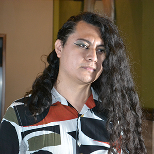

About Us

Band Formation History
Born in 2019, Puebla, Mexico. Penumbral Path is an experience that tells real life stories to raise awareness of certain social problematics through music; as artists, we attempt to break the boundaries between genres, fusing our varied influences with our own sounds, hoping to achieve something that you as the listener will connect with.


| Joe Liévano | Link to his/her social media |
| Kevin López | Link to his/her social media |
| Alberto Flores | Link to his/her social media |
Joe Liévano
Kevin López

Alberto Flores